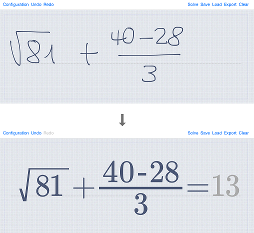

The below use cases are only examples of applications where the Math Widget has been used, sometimes with additional features. Note that all available features for the Math Widget are listed in the API reference.
Here is an integration example of the Math Widget in a digital calculator. In this scenario, the user handwrites mathematical operations and equations. Handwritten input is converted into a digital text formula. Thanks to a solver component, the widget can also optionally solve simple arithmetic and trigonometric formulas, returning a calculated result to the calling application. The content of the displays can be exported as an image or as a MathML or LaTeX string.
